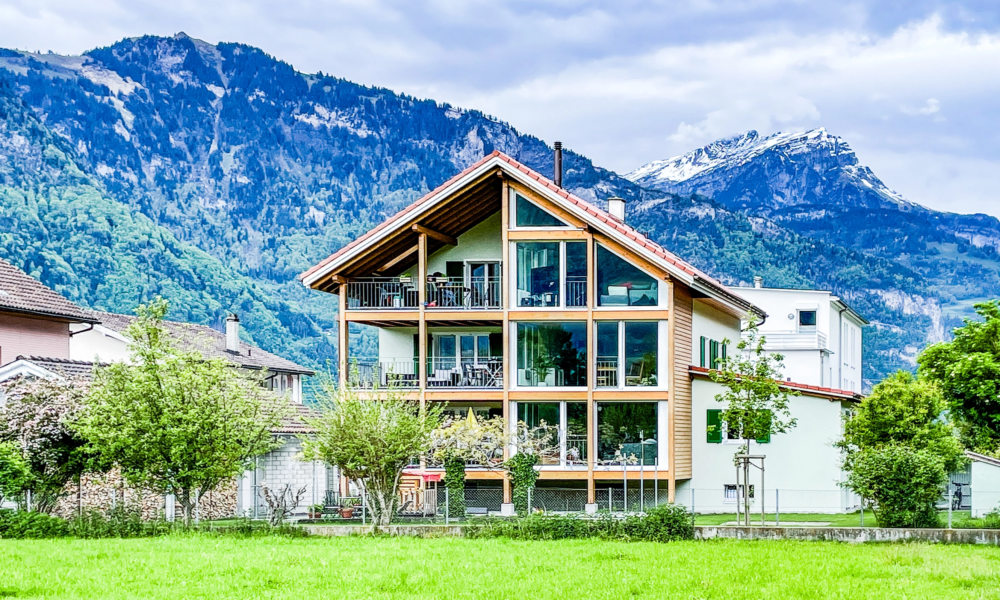
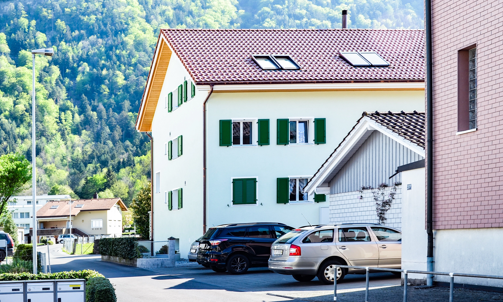

Erneuerung
Bauherrenseitige Projektleitung für das Konzept und den Umbau eines 70 jährigen Hauses. Die Erneuerung von alter Bausubstanz ist eine besondere Herausforderung und verlangt eine Reihe von Abwägungen und viel Fingerspitzengefühl in der Umsetzung.
Auftraggeber
privat
Architekt
Arnold + Thalmann Architekten AG, Altdorf
Fertigstellung
2019
Galerie


Planen Sie die erneuerung eines Altbaus? Wir beraten Sie gerne persönlich.
Kontakt aufnehmen